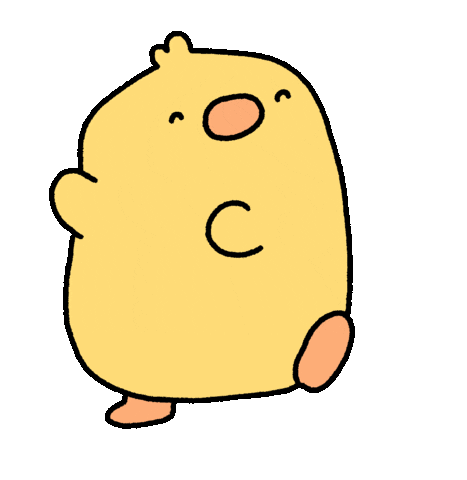

Feliz aniversário!
Eu sou péssima nessas coisas sentimentais mas tudo o que eu escrevi ai embaixo é verdade. Eu amo muito vc

Oi, eu nem sabia o que escrever aqui sabia? Queria falar tantas coisas mas eu nem tenho criatividade kkkk Você é a minha melhor amiga desde dos 11 ou 12? Não lembro, mas é muito tempo e sabe de uma coisa eu vou expor tudo o que eu penso ao longos desses anos sobre vc. Você é uma chata. Isso mesmo como você pode quebrar todas as minhas barreiras quado se trata de carinho e amizade? Eu sou chata, brenda, odeio contato com outras pessoas, odeio falar e odeio vc por fazer eu não conseguir ser nada disso com vc. Odeio o fato de quando se trata de vc eu não ser orgulhosa, odeio sua companhia ser tão confortável ao ponto de eu confessar meus maiores segredos. Brincadeira kkk eu não odeio nada sobre vc, pelo contrário, eu amo isso. Sempre achei que isso de melhor amiga era coisa só de tv que inventavam nos desenhos que eu assistia, mas ai vc apareceu e BOOOOM! comprovei que é tudo real, nunca imaginei ter alguém com contar tanto assim que não fosse minha familia, nunca pensei que ia ter uma amiga pra falar sobre garotas e ela me ouvir, nunca pensei merecer alguém como vc. Espero nunca te perder, fui burra e imatura por algumas(muitas vezes) mas eu prometo unca mais fazer isso. Você é e sempre vai ser minha melhor amiga de todas. Amo sua lealdade comigo, sua confiança, amo tudo em você.
E obrigada por me aturar apaixonada, eu sei que isso é um castigo e me faz acreditar que vc relamente me ama muito pq olha...THAU AMO VC!
só gnt otária clica aqui não disse onde vai ter que adivinhar